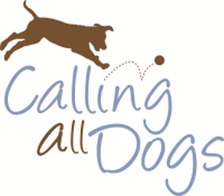
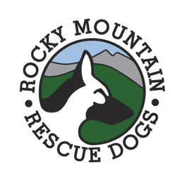
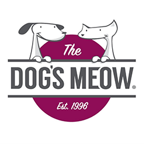

VIRTUAL VISITS: ONLINE VIDEOS
Temporarily this past summer, The SLC County Library had permission for stories to be read publicly online. Therapy dog Moonshine and his handler Heather video-recorded several bedtime stories. While Heather read the story aloud, she frequently showed the book’s pages to the camera, and petted Moonshine who reclined next to her listening with his eyes closed. At the end of the story-time, viewers were treated to watching Moonshine enjoy some healthy snacks. These and other videos can be viewed on the Therapy Animals of Utah Pet Partners YouTube channel Handlers who want to refresh their skills can view short training videos on our youtube channel as well.
  